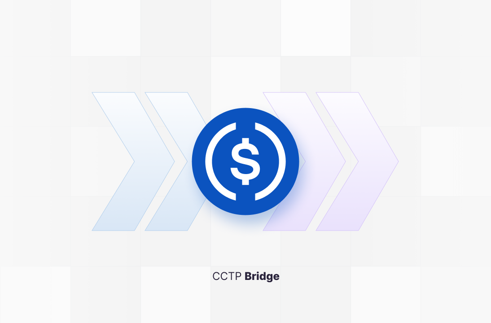

Mobirise
CCTP Bridge usually refers to Circle’s CCTP (Cross-Chain Transfer Protocol) bridging mechanism, which helps move stablecoins (typically USDC) across different blockchains in a way that tries to be safer and more consistent than older “lock-and-mint” approaches.
Here’s the human version of what’s going on.
The simple problem it solves
Imagine you have USDC on Chain A and you want it on Chain B. Before CCTP, a lot of cross-chain systems worked like this:
You send USDC to a bridge contract on Chain A.
The bridge “locks” your USDC (or burns it).
Somewhere on Chain B, the bridge system “mints” an equivalent amount of USDC for you.
That design can work, but it introduces a few real concerns:
Custody risk / trust assumptions: Who really controls the locked assets?
Timing and consistency: Different chains have different finality rules, so execution order matters.
Security complexity: If the bridge relies on multisigs or privileged operators, that adds risk.
CCTP’s whole vibe is: “We want a cross-chain transfer that is more standardized and reduces the number of moving parts that users have to implicitly trust.”
What CCTP is (conceptually)
CCTP = a protocol for moving tokens across chains, especially USDC, using Circle-native messaging.
Instead of acting like a generic bridge that burns/locks and then mints with broad discretion, CCTP is designed so the “minting side” can be driven by a verified transfer on the other chain. In other words, the destination chain knows that the source chain actually happened in a way the protocol considers valid.
So when you use a “CCTP Bridge,” you’re basically using an interface (often a dApp or routing service) that calls into Circle’s CCTP flow to move USDC from one network to another.
The main idea: burn/mint is coordinated
A typical CCTP flow (conceptually) looks like:
You lock/burn (or otherwise initiate) the transfer on the source chain.
The protocol produces a transfer message/proof that the destination chain can validate.
On the destination chain, the protocol mints USDC (or releases an equivalent amount) after verification.
The key difference from many older bridges is that the destination minting is not just “trust the bridge admins happened to do it.” It’s more like: “the destination chain can verify that the required source-chain event was finalized according to the protocol’s rules.”
Why people like it
People talk about CCTP Bridge because it often has these practical advantages:
USDC consistency: You’re moving a well-known asset (USDC) and keeping the transfer logic standardized.
Operational simplicity for users: You don’t have to manually figure out bridge steps like approvals, claims, and recovery procedures as much.
Reduced trust surface (in theory): Many traditional bridges rely heavily on privileged roles and complex multisig governance. CCTP aims to minimize how much users need to trust that governance is behaving correctly.
More predictable behavior: Because it’s protocol-driven, transfers follow a clearer set of mechanics compared with one-off bridges with custom logic.
But it’s not magic (important human caveats)
It’s still a cross-chain system. That means there are realities you should always keep in mind:
Finality / timing: Even if the protocol is robust, cross-chain messaging takes time and depends on chain confirmations.
Smart contract risk: Every bridge mechanism—however well-designed—depends on contracts on multiple chains. Bugs are possible.
Network/route constraints: Not every token pair or chain combination may be available. CCTP is centered around USDC and supported networks.
Fees and liquidity: Some frontends or routes may charge fees or may be limited by how the ecosystem is currently configured.
So the human conclusion is: CCTP Bridge is generally seen as a better-behaved bridge path for USDC, but it’s still bridging.
What you might be seeing when you search “CCTP Bridge”
When people say “CCTP Bridge,” they might mean one of these:
A website/app that routes transfers through CCTP (so you choose “from chain X to chain Y,” and it handles the protocol steps).
A specific integration where the app uses Circle’s CCTP under the hood.
A “bridge UI” that labels itself after CCTP to distinguish it from generic bridging.
In most cases, CCTP is the underlying mechanism, while the “bridge” is the user-facing product.
Quick example (in plain language)
Suppose you’re on Ethereum with USDC and want it on Arbitrum. A CCTP-enabled bridge flow would let you initiate a transfer, and then—after the protocol’s cross-chain verification—USDC appears on Arbitrum for you. It feels like teleportation, but behind the curtain it’s coordinated token burning/locking and verified minting.
Mobirise